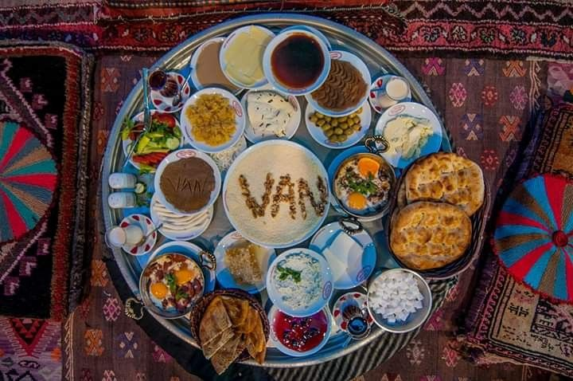
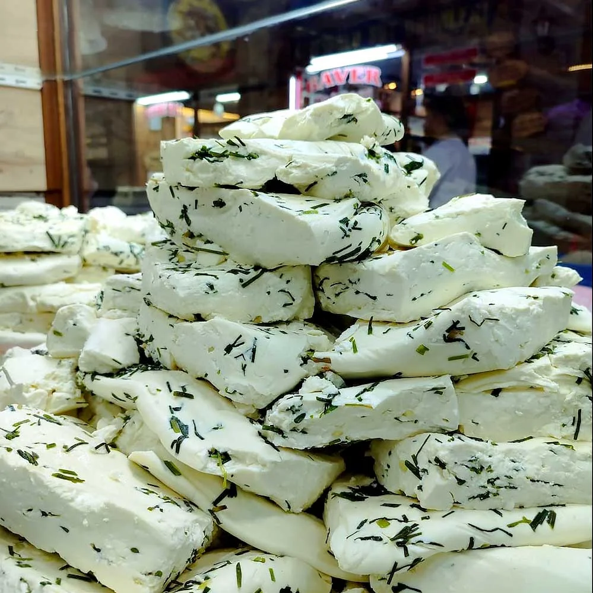
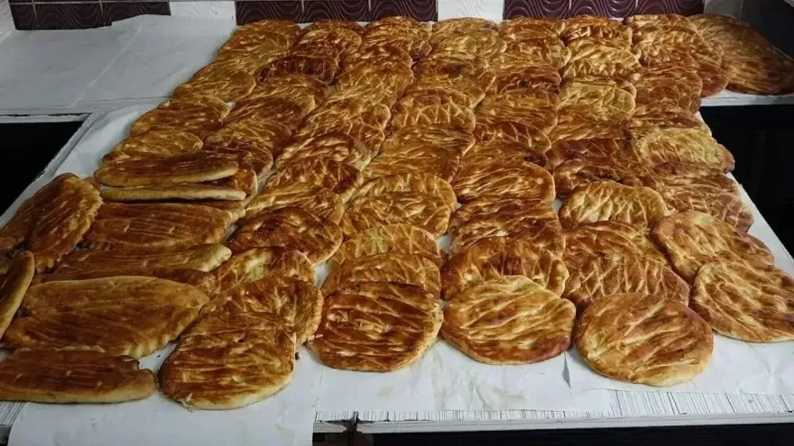
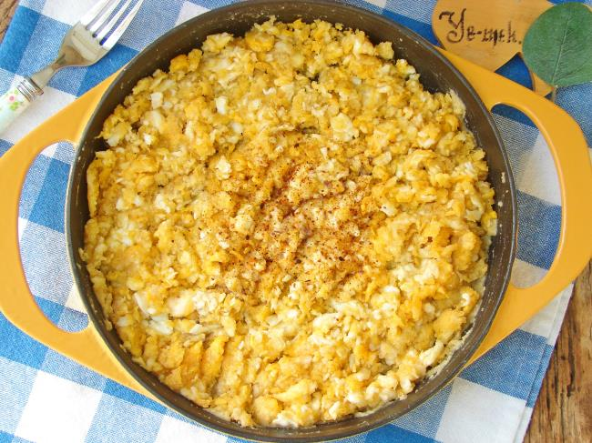

REHBERİ YÜKLENİYOR...
Dünyanın En Zengin ve Geleneksel Kahvaltı Kültürü

Van Kahvaltısı, sadece bir yemek öğünü olmanın çok ötesinde, binlerce yıllık bir tarihin ve kadim bir misafirperverlik geleneğinin günümüze kadar ulaşmış en lezzetli mirasıdır. Şehrin İpek Yolu üzerindeki durak noktalarından biri olması, bu sofranın farklı medeniyetlerin lezzet birikimlerini harmanlamasını sağlamıştır. 1 Haziran 2014 tarihinde tam 51.793 kişinin aynı anda kahvaltı yapmasıyla kırılan Guinness Rekoru, bu sofranın ne denli görkemli olduğunun dünya çapındaki kanıtıdır.
Van kahvaltısını diğer tüm kahvaltılardan ayıran temel özellik, ürünlerin tamamen doğal yöntemlerle hazırlanması ve sanayi tipi üretimden uzak, yöresel yaylalardan taze taze sofraya gelmesidir. Van'ın yüksek rakımlı meralarında yetişen sığır ve koyunların sütünden elde edilen ürünler, sofranın temelini oluşturur.
Bu sofranın vazgeçilmez ürünü, Van yaylalarından toplanan sirmo, heliz ve mendo gibi şifalı otların sütle buluşmasıyla hazırlanan Otlu Peynir'dir. Peynirin toprak altındaki küplerde olgunlaşma süreci, ona o benzersiz aromasını kazandırır. Ayrıca balla süzme yoğurdun karışımıyla elde edilen Jaji ve Van'ın meşhur fırınlarında pişen sıcak tırnak pidesi, bu deneyimin ayrılmaz parçalarıdır.

Dağ otlarıyla lezzetlenen, küplerde olgunlaştırılan eşsiz Van klasiği.

Bol tereyağlı ve özel iç harçlı, taş fırınlarda pişen geleneksel lezzet.

Un ve yumurtanın tereyağında kavrulmasıyla yapılan enerji deposu.
Toplam Ziyaretçi
kişi bu siteyi ziyaret etti